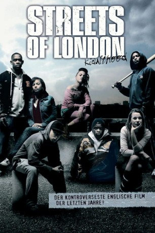
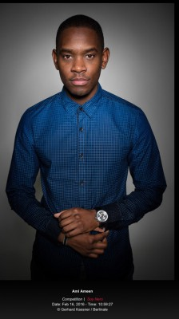
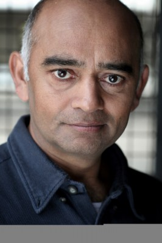

#10953 Streets of London - Kidulthood
Alternativ: Kidulthood (Englischer Titel)
 
 IMDB-Wertung: 6.8 / 10
IMDB-Wertung: 6.8 / 10  Metascore: 0
Metascore: 0 
“Wieder Teenager-Mord in London: Die brutalen Teenager-Morde in London brechen nicht ab. In de Nacht zum Sonntag ist wieder ein 16-Jähriger ermordet worden. Zwei unbekannte Täter stachen den Jungen nach einem Kinobesuch im Osten Londons nieder. Er ist das sechste Opfer der Gewalt.” Willkommen im wirklichen Leben, willkommen im 21. Jahrhundert, willkommen auf den Straßen Londons. Für den 15-jährigen Trife ist das Leben Tag für Tag ein Abenteuer: Gefangen zwischen den Welten seiner Schulfreunde, dem Mädchen, das er liebt und seinem mächtigen und gefährlichen Onkel, besteht sein Alltag aus Waffen, Drogen und Gewalt. Der Selbstmord einer Mitschülerin und der verbundenen Schulausfall wird mit der Möglichkeit genutzt, shoppen zu gehen, high zu werden und sich auf eine Party vorzubereiten. Doch es kommt stets anders als geplant. Auf den Straßen Londons wachsen Teenager schnell auf – und 48 Stunden können ein ganzes Leben sein.
Jahr: 2006
Dauer: 91 Minuten
FSK: 16
Land: England Studio: Capelight PicturesTonspuren: DTS - ,
Untertitel: Deutsch,
Auflösung: 1080p (1920x816) Größe: 5314 MB
Genre: Drama, Krimi, Liebe
Regisseur: Menhaj Huda
Drehbuch: Noel Clarke
Soundtrack: The Angel
Darsteller:
-  Aml Ameen als Trife
- Red Madrell als Alisa
 Noel Clarke als Sam
Noel Clarke als Sam- Adam Deacon als Jay
 Jaime Winstone als Becky
Jaime Winstone als Becky Nicholas Hoult als Blake
Nicholas Hoult als Blake- Queen Kate Ajike als Carleen
- Ben McKay als Rapper
 Rafe Spall als Lenny
Rafe Spall als Lenny Kate Magowan als Stella
Kate Magowan als Stella Ray Panthaki als Mark
Ray Panthaki als Mark- Christopher Villiers als Mr. Fineal
-  Bhasker Patel als Shopkeeper
- David Schaal als Taxi Driver
- Paul Putner als Mr. Hardy
- Richard Angol als Street Guy
 David Ajala als Desmond (uncredited)
David Ajala als Desmond (uncredited)- Femi Oyeniran als Moony
- Madeleine Fairley als Claire
- Rebecca Martin als Katie
- Adem Bayram als Vinnie
- Stephanie Di Rubbo als Shaneek
- Medhavi Patel als Sophie
- Cornell John als Uncle Curtis
- Pierre Mascolo als Andreas
- Ortis Deley als Derek
- Hannah Miles als Mrs. Fineal
- Leila Bertrand als Alisa's Mum
- Stephen Taylor als Rupert
- Tom Burroughs als Hamish
- Cleo Sylvestre als Sam's Mum
- Alexander Hanson als Manager
- Sam Callis als Security Guard
- Sushil Hunjan als Nisha
- Marsha Miller als Trife's Mum
- Toby Dantzic als Shop Assistant
- Alison Newman als Claire's Mum
- Natalie Wright als Debbie
- Gav als School Bullie's Friend
- Amir Madaninejad als Himself (uncredited)
Datei: X:\2-Dilogie(N-Z)\Streets of London\Streets of London - Kidulthood (2006, FSK16, 1920x816).mkv seit 08.04.2019
Festplatte: HD Collection-2(A-Z)-3(A-M)
 Alle Filme aus Gruppe '2-Dilogie(N-Z)\Streets of London'
Alle Filme aus Gruppe '2-Dilogie(N-Z)\Streets of London'